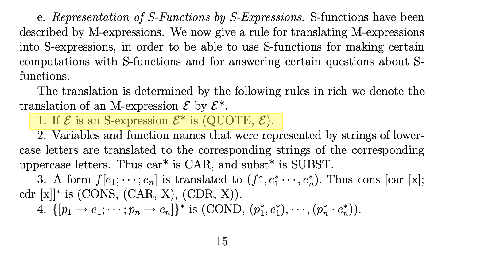
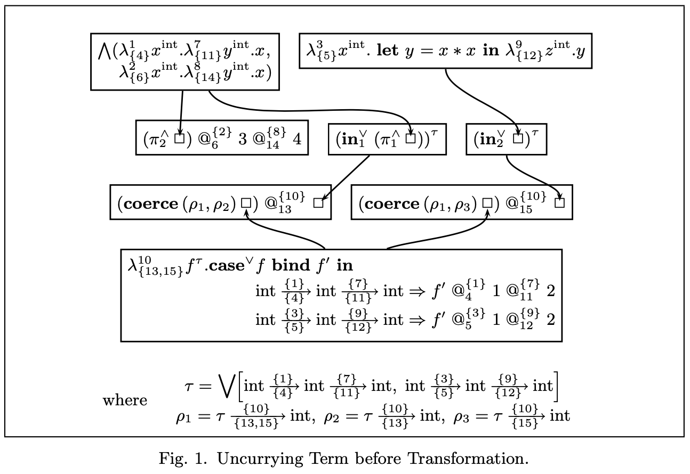
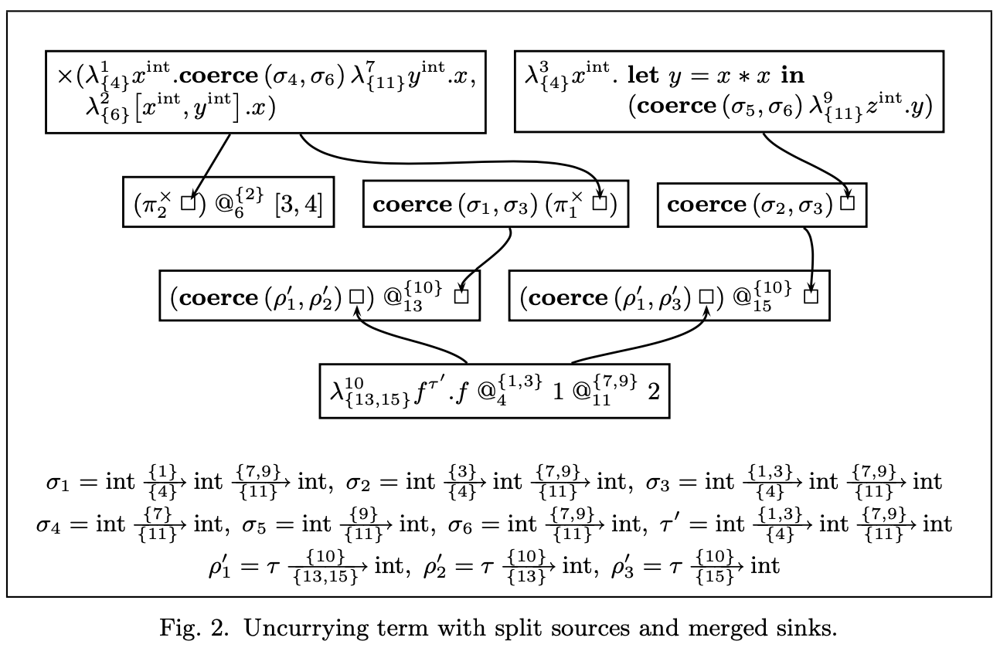
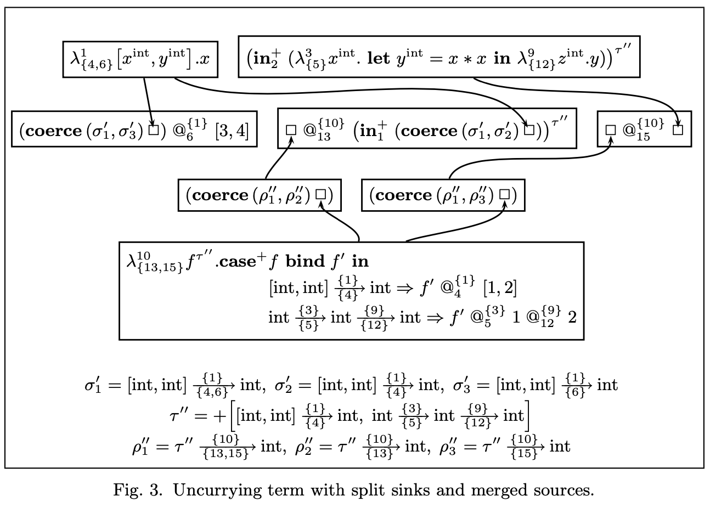
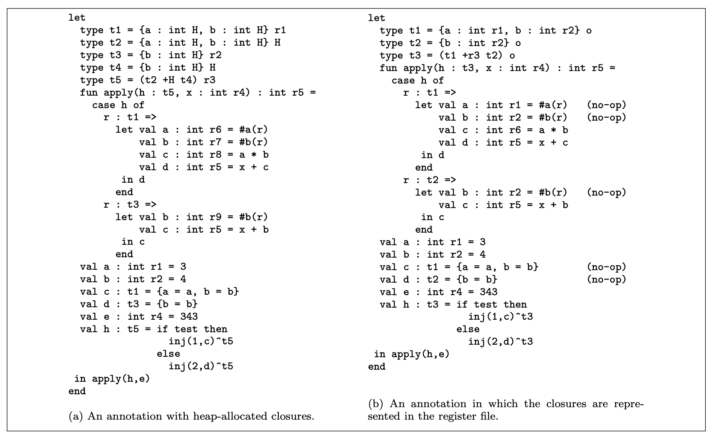

This work was carried out as my PhD thesis at Boston University
under the direction of
Assaf Kfoury
with additional advising by
Mitch Wand. It was
published in a 1992 TOPLAS article
M-LISP: A representation-independent dialect of LISP with reduction semantics.
Programming in LISP is incredibly fun! Symbolic expressions
(S-expressions) are the ultimate flexible recursive data structures,
immutability is the default and, since everything is an S-expression,
it's fairly easy to write meta-programs – programs that work on
the representations of other programs.
But something seems a little fishy – how can the form
(bobcat deer bear) be a list while the form
(find bobcat bobcats) is a function call? This was
the question put to me by Mitch Wand when I was a graduate student in
1987. I spent untold hours thinking about this puzzle. The answer
came to me in a flash one morning in the summer of 1988 –
there is a simple error in the original definition LISP. (!)
The error appears on page 15 of John McCarthy's
seminal 1960 paper introducing LISP: Recursive Functions of Symbolic Expressions and Their Computation by Machine.

The error, highlighted above, was subsequently propagated into all derivative
dialects of LISP including Scheme and Racket. Correcting the
error and tidying up the downstream consequences leads to a simpler
programming language but the metalinguistic power is lost. The
details are laid out in the aforementioned TOPLAS article.
This work was carried out during my tenure as an Assistant Professor at Boston College. It was published in a number of articles, most notably in a 2000 JFP article A calculus with polymorphic and polyvariant flow types, joint with Joe Wells, Lyn Turbak and Allyn Dimock.
Sometime in 1995 I attended a talk by Trevor Jim on principal typings. Subsequent conversations with Assaf Kfoury, Joe Wells and Lyn Turbak led to the establishment of the Church Project, a joint research project between Boston University, Wellesley College and Boston College. The central focus of the Church Project was the design and development of a typed intermediate language (TIL) that might be used in a reliable optimizing compiler for ML-like programming languages. The advantage of a typed IL over an untyped one is that the compiler can type-check the intermediate representation (IR) after transformation steps. The particular TIL developed in the Church Project used interesection and union types together with flow labels. This enabled the compiler to track the flow of values from their creation points to their consumption sites and to choose data representations in a safe and flexible way. For example, the following snippet of code
produces a 3-tuple as a value, using 3 principal functions k, g and h. The example illustrates non-trivial flow of functions to various call sites. In the IR, the program is represented with both type and flow information.
In the diagram, arrows represent flow. The function k can flow to two different call sites, specifically call site 4 or call site 6. The function is represented as a virtual 2-tuple, allowing for the possibility of two different copies of k. The compiler can choose to reify the virtual 2-tuple into a real heap-allocated 2-tuple in the object code. This process is called source splitting.
The type system also allows the compiler split sinks by reifying virtual case dispatches to real case dispatches in the object code.

I worked on high-performance certifying compilers for higher-order
typed programming languages such as Standard ML. I spent several
years working as a founding member of the Church Project.
Together with Robert Harper, I co-founded the ACM Types in
Compilation (TIC) series of workshops. The TIC workshop series
subsequently evolved into the ACM Types in Language Design and
Implementation (TLDI) series of workshops. The last of these met in
2012.
Some text.
